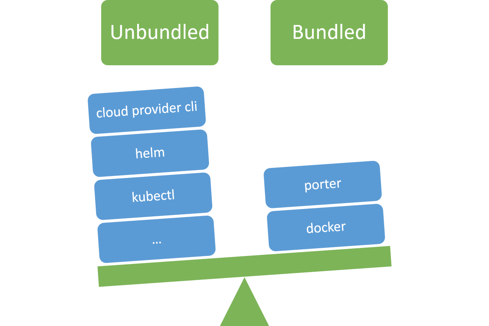

Porter is a CNCF Sandbox project

Package your application artifact, client tools, configuration and deployment logic
together as a versioned bundle that you can distribute,
and then install with a single command
What is a bundle?
Bundles are installers. They contain everything you need to deploy stuffed inside a Docker image.
What problems do bundles solve?
When are bundles useful?
- Give users a 1-click installation to try your product
- Help customers install and manage your software
- Create a marketplace for your platform
- Standardize your own internal deployments
Bundles contain everything they need to deploy
Deployment tools are already installed in the bundle
Bundles encapsulate the deployment logic
Figuring out how to deploy a new application is a game of 20 questions...
- Is there an installer script or do I need to find the documentation?
- How do I know what environment variables to set and config files to create?
- Which client tools should I call and with what flags?
Bundles are self explanatory
$ porter explain --tag myorg/myapp:v1.17.1
Name: myapp
Description: A really good application
Version: v1.17.1
Credentials:
Name Description Required
kubeconfig A kubeconfig with cluster admin true
Parameters:
Name Description Default Required
logLevel LOG ALL THE THINGS! info false
Actions:
Name Description
maintenance-mode Pauses the app and puts up a cute sign
This bundle uses the following tools: az, helm, terraform.
How do I install a bundle?
$ porter install staging-app --tag myorg/myapp:v1.17.1 --cred staging
- You only need to know the bundle's tag
- You don't need to be familiar with the app or tooling
- You can install any application with the same command